Grados del Complejo Educativo Prof. Iván Alexander Burgos
Regresar
Primero Grado
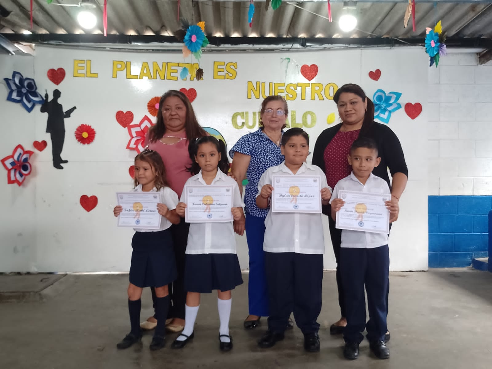
Segundo Grado
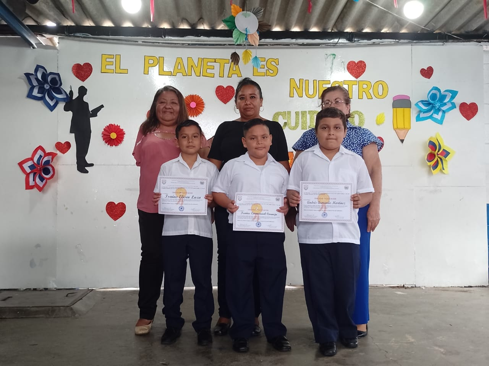
Tercero Grado
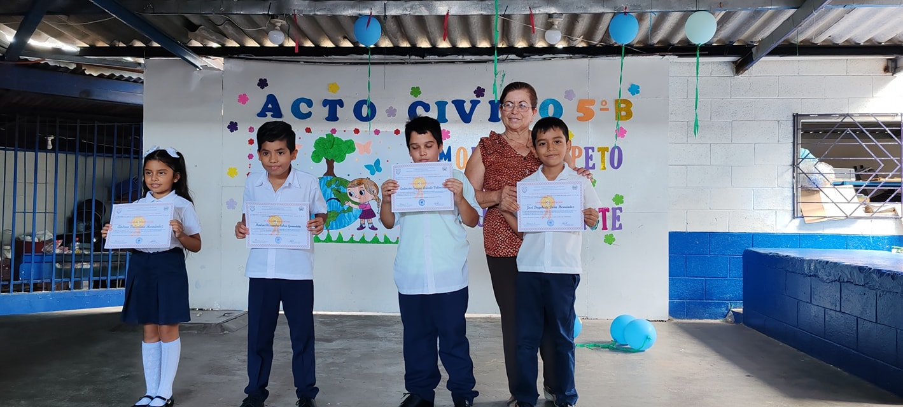
Cuarto Grado
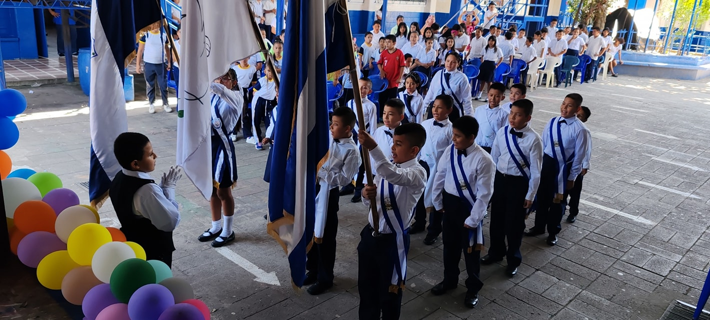
Quinto Grado
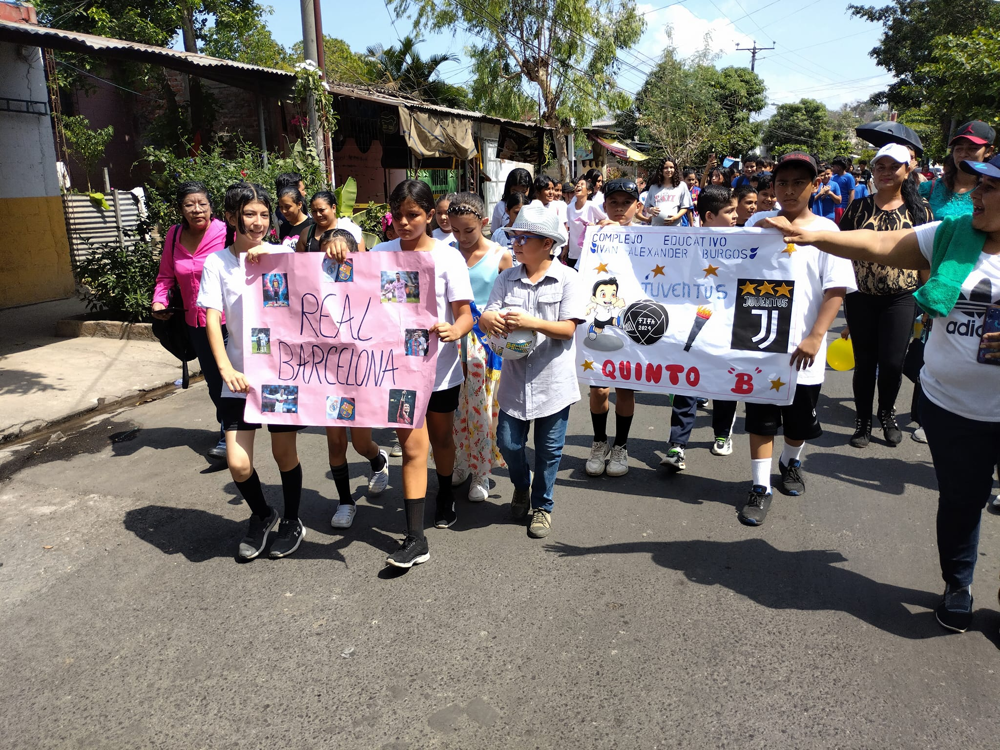
Sexto Grado
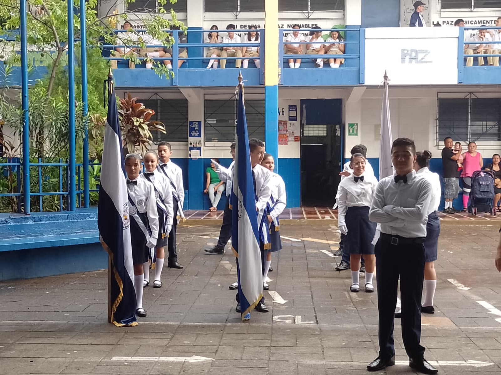
Septimo Grado
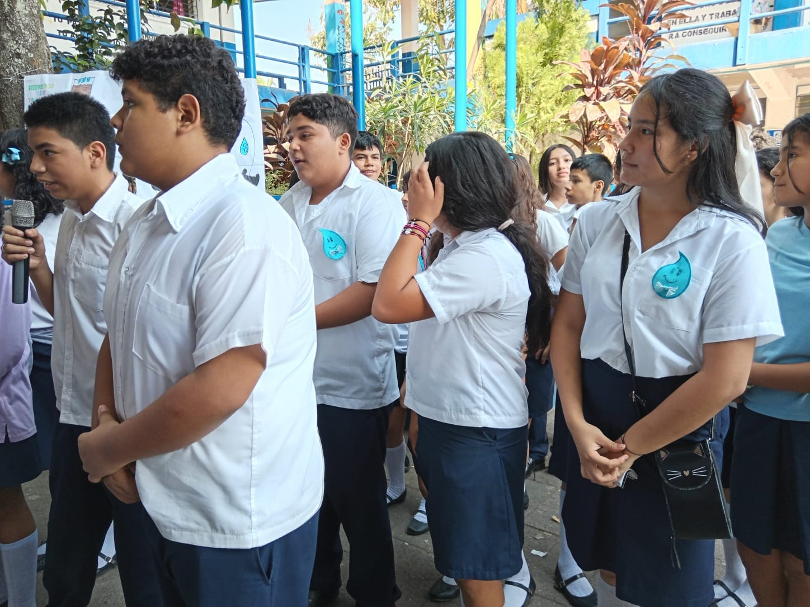
Octavo Grado
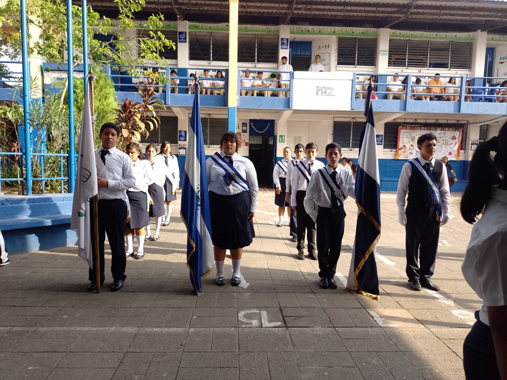
Noveno Grado
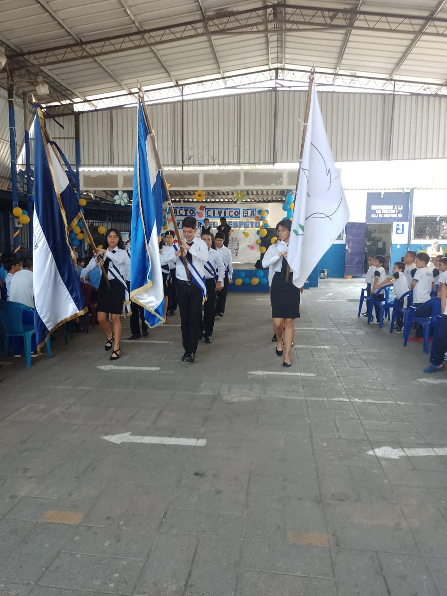
Primer Año General
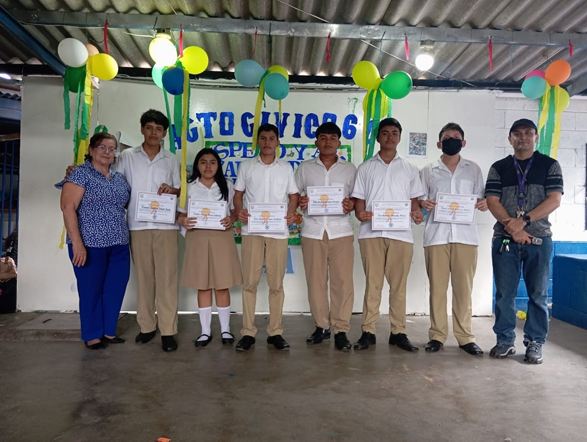
Segundo Año General
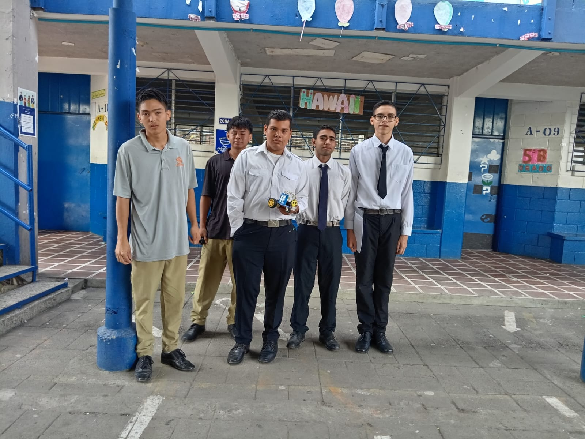
Primer Año Técnico
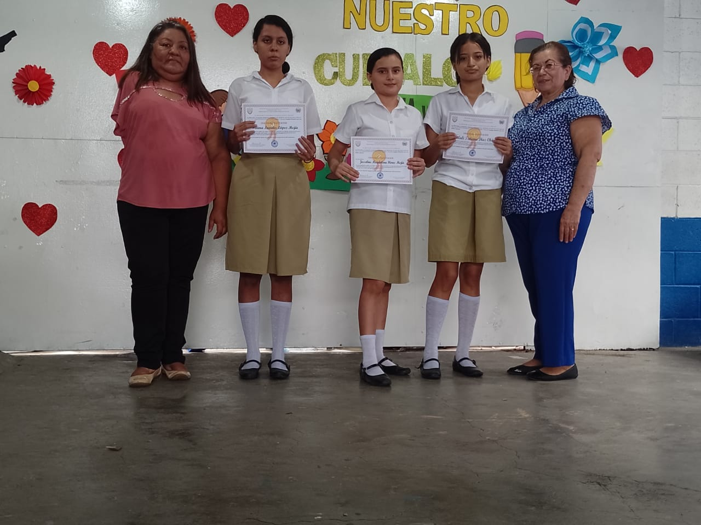
Segundo Año Técnico
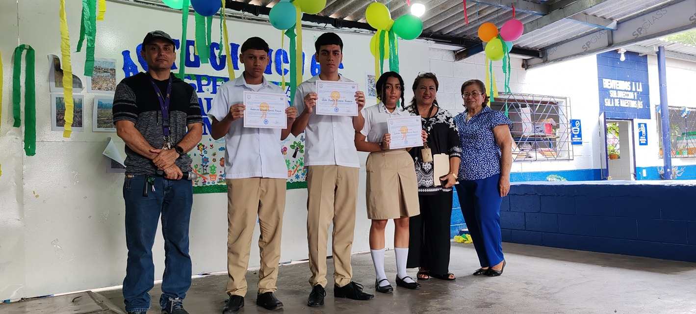
Tercer Año Técnico
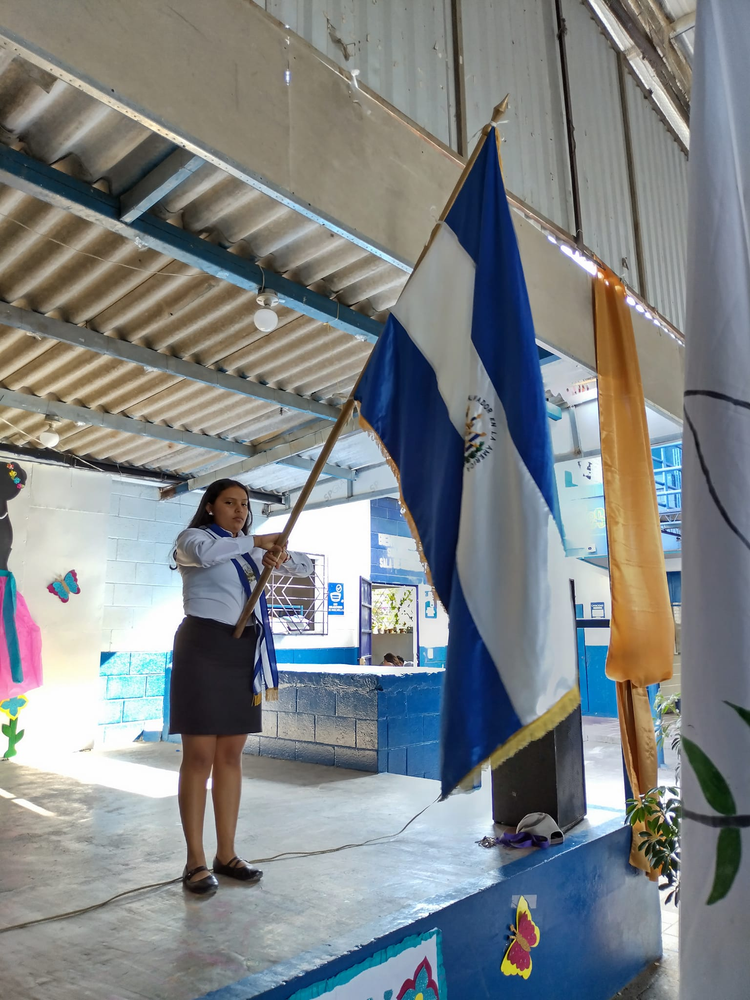